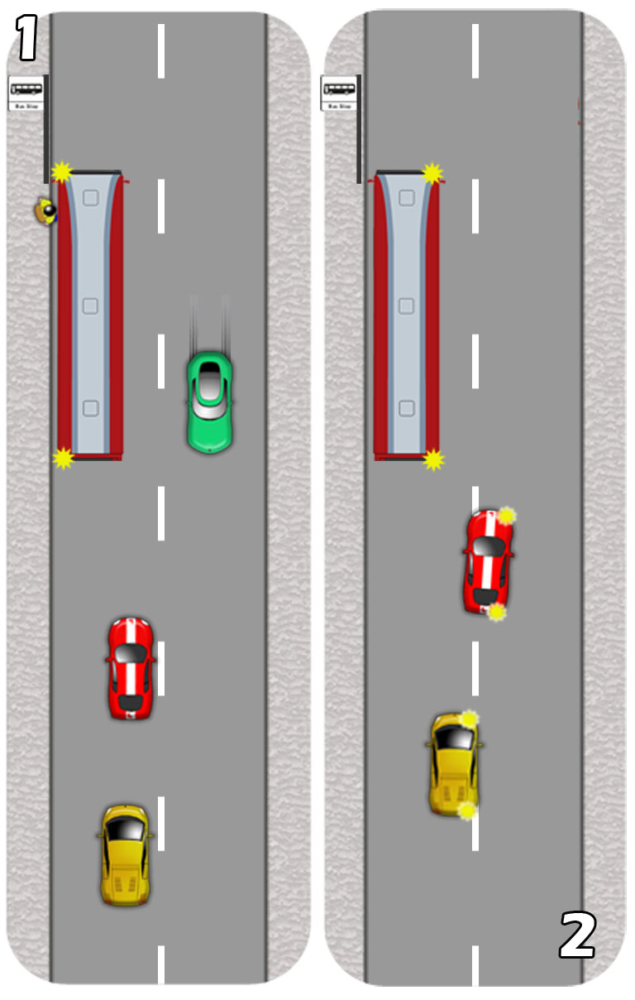

When following buses, anticipate them stopping at bus stops by keeping a keen eye for their left signal.
Stay well behind them so that you might see the bus stop ahead.
Keeping a good distance behind also gives you extra space and time to respond when the bus signals to pull over. Respond by applying the overtaking procedure.
1.If it’s unsafe to pass, then stop and wait two or three car lengths behind the bus and near to the centre line so that you can see past it.
Plan to overtake the bus when it is safe. Don’t just sit and wait until it pulls away as it may be stopped for some time.
When it is clear to pass, make sure the bus hasn’t signalled right to set off, also checking your main and right mirror for traffic overtaking from behind. If it’s safe, signal right (for the benefit of the bus driver at least) and steer out smoothly, allowing it plenty of space.

2.The yellow car in the picture above has time to abondon its passing procedure as the bus signals to pull away. The red car is already committed so should continue. Bus drivers are trained to apply their indicator as soon as they're ready but will not move until vehicles in the process of overtaking have had time to pass.
Pass cautiously in case passengers that have departed the bus are trying to cross the road in front of it.